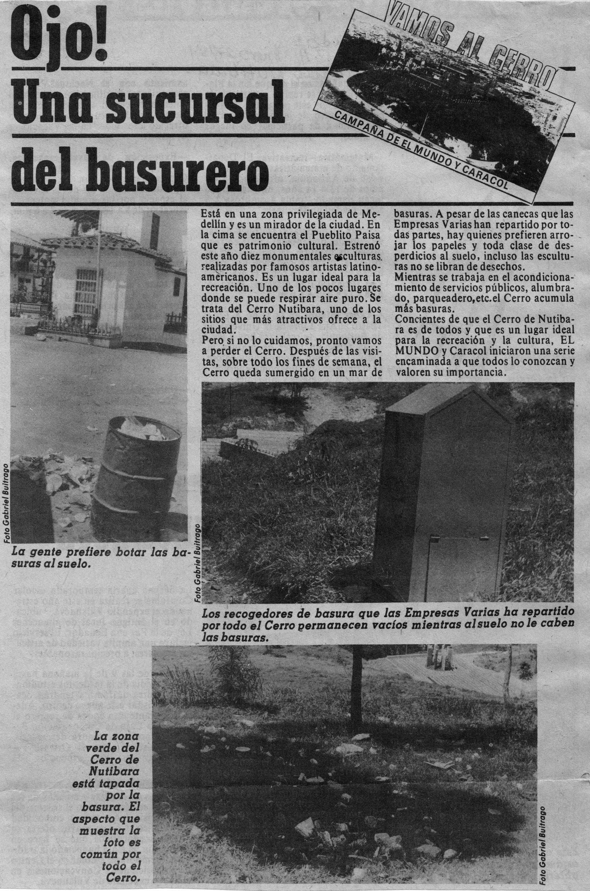

Christo & Jeanne-Claude, presentación por Carlos Arturo Fernández, 1997.

MTAA, Simple Net Art Diagram, 1997.
Kevin Bewersdorf, Maximun Sorrow, 2008.
Documenta X, 1997.
Vuk Ćosić, Documenta Done 1997.
Presentación "Christo & Jeanne-Claude" en un diskette, MAMM, 1997.
Cerro Nutibara, ca. 1980.
Diario "El Mundo", Mayo 19, 1983.
Diario "El Colombiano", Mayo 19, 1983.
Diario "El Mundo", Octubre 10, 1983.
Diario "El Colombiano", Diciembre 1, 1983.
Construcción del Parque de Esculturas del Cerro Nutibara, 1983.
Manuel Felguérez, "construcción",1983.
Jesús Rafael Soto, "penetrable de agua",1983.

Diario "El Colombiano", Diciembre 3, 1983.
Diario "El Colombiano", Enero 4, 1984.

Diario "El Mundo", Enero 27, 1984.
Diario "El Mundo", Abril 4, 1984.
Proyecto de remodelación del cerro nutibara, Alcadia de Medellín, 2019.

Concurso Nacional de Arte Riogrande II, 1989.
Publicidad, Concurso Nacional de Arte Riogrande II, 1989.
Proyectos ganadores, Concurso Nacional de Arte Riogrande II, 1989.
Primera Bienal Internacional de Videoarte, MAMM, 1986.

John Jairo Correa, "las mil y un imágenes", 1986.
Confabularios -grupo de video-, "duelo" + "bajo el jardín",1988.
Yo Nakajima, "hand's window", 1988.
80 años Coltejer, 1987.
Carlos Arturo Vélez,"sueño de moda", 1988.
Manuel Guerrero Mora,"video ensamble", 1990.
Symbolics Graphics Division, 1989.

Diario "El Mundo", Septiembre 8, 1990.
Omaira Abadia, "Dalí liquído", 1991.
Omaira Abadia, "Dalí liquído", 1991.
Omaira Abadia, "Dalí liquído", 1991.
Omaira Abadia, "Dalí liquído", 1991.
Margarita Becerra Cano, "to whom it may concern", 1991.

V Bienal de Videoarte, 1995.
LabSurLab, Abril 4 - 12, 2011.
labSurlab * Co•operaciones, 2012.
Medelab, Noviembre 2-8, 2013.
Medelab, página web, ca.2014.
Medelab, Laboratorios Creativos en Red, 2014.
EL PUERTO: ARTE, CIENCIA, TECNOLOGÍA Y COMUNIDAD, Museo de Arte Moderno de Medellín en alianza con Museo de Antioquia, Medellín Ciudad Inteligente y Prince Clauss Fundation, 2014.
#episodiodigital, en el feed de IG del MAMM, 2017.
#episodiodigital, en el canal de YT del MAMM, 2017.

#episodiodigital, MAMM, 2017.